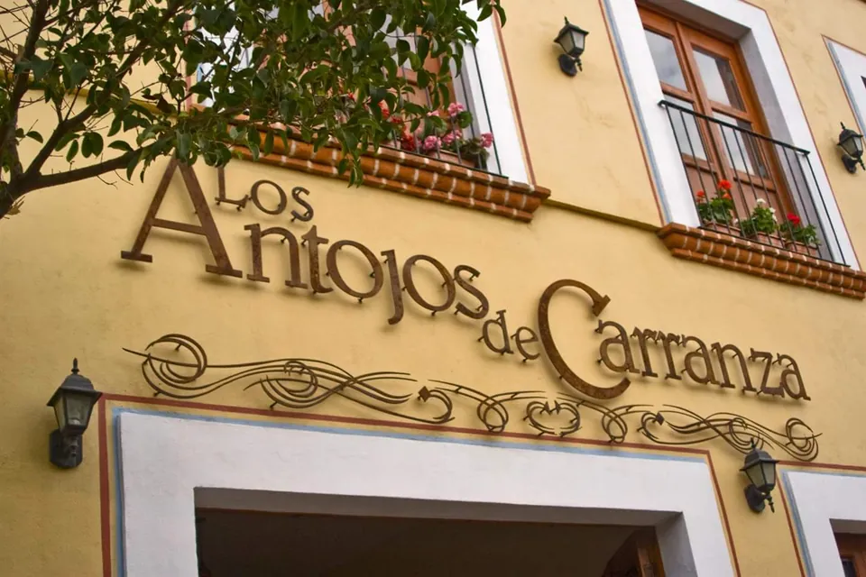
Chilaquiles en la casona del centro.
Desayunos y antojos con patio y papel picado, en José F. Elizondo 203.
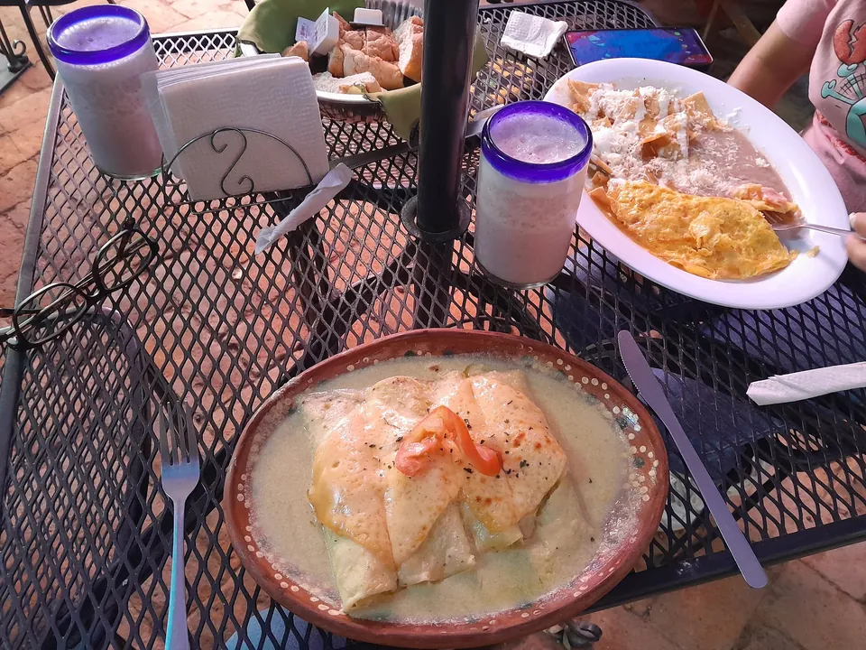
La carta
Lo que se pide en la casona.
El precio de cada platillo se pregunta al llamar: 449 994 1977.
Arma tu mesa
Cuelga lo que se te antoja.
Toca las banderitas. Abajo se arma tu mesa para leerla por teléfono o copiarla.
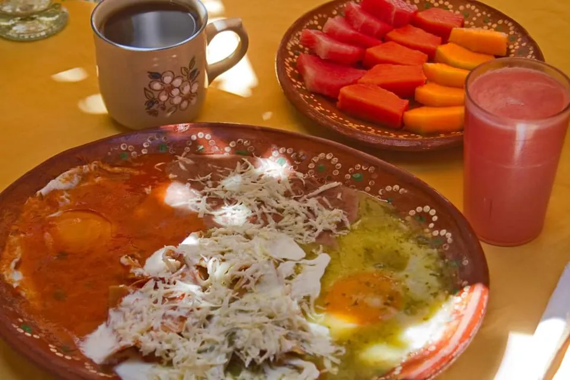
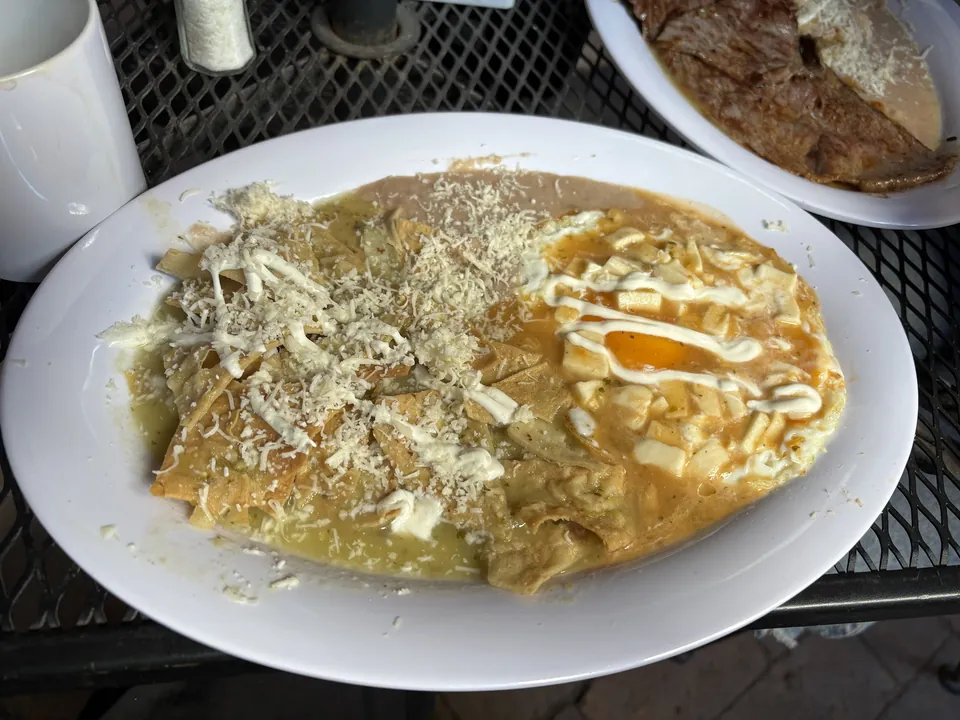
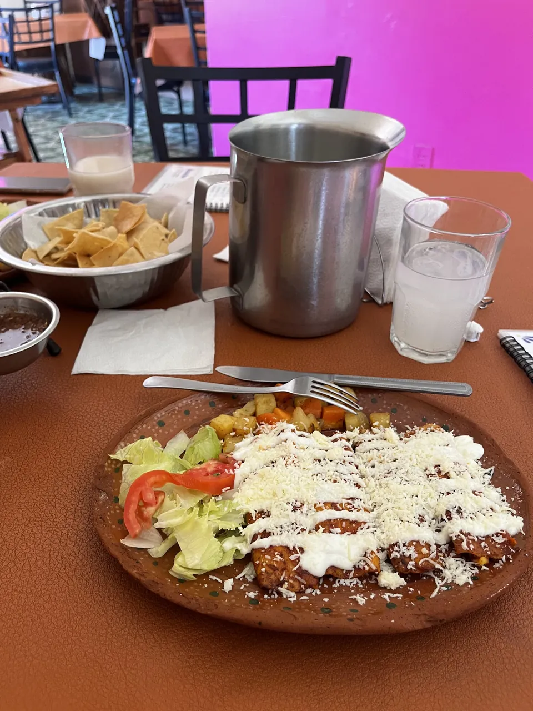
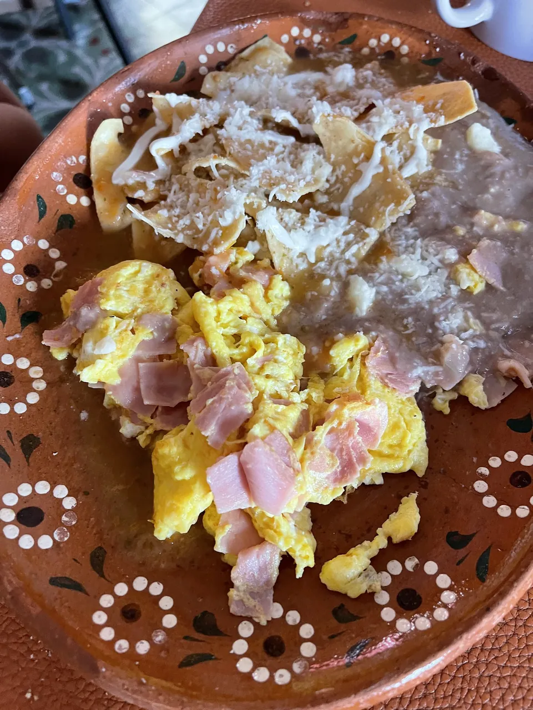
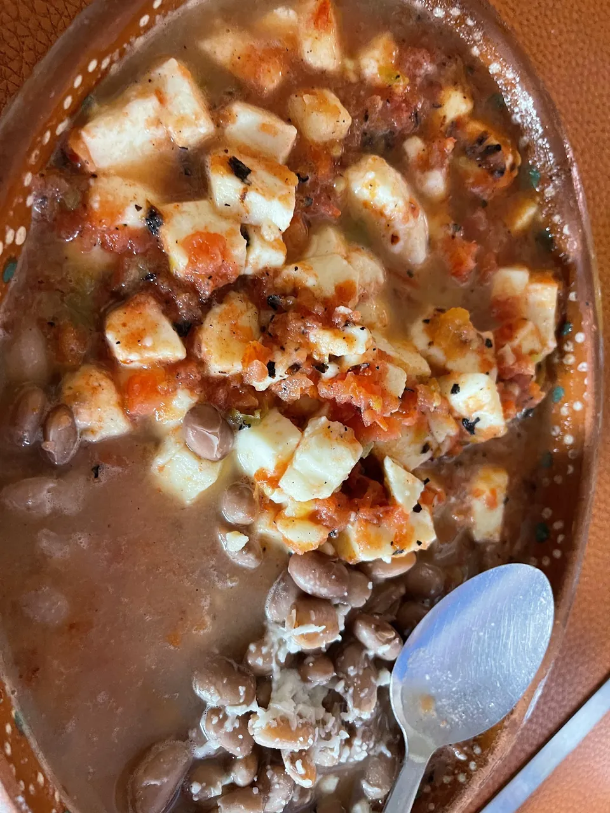
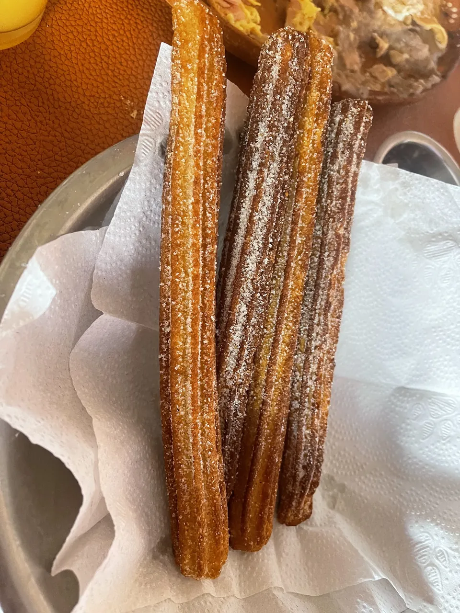
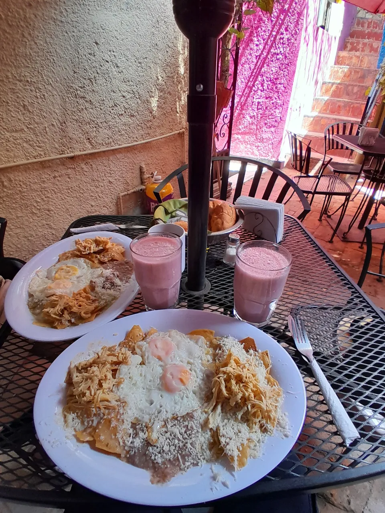
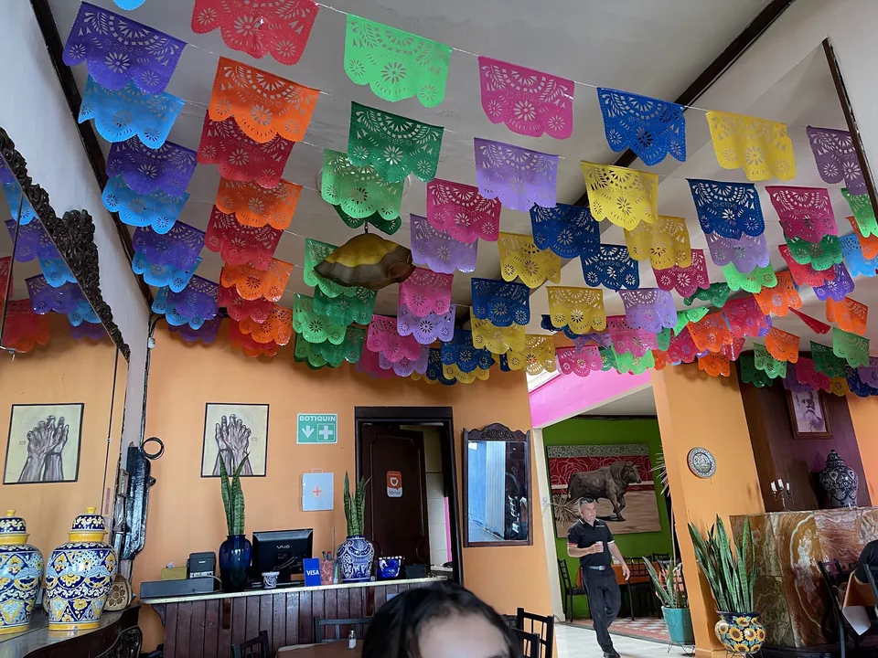
Casa con patio.
Reseñas
Dicho en su mesa.
4.2 en Google con 1,649 opiniones. Aquí van algunas, tal cual las escribieron.
★★★★★Lugar familiar para desayunar, bastante amplio para muchas personas.
★★★★★La verdad es que son muy atentos a pesar de que ayer que fue día del padre estaba llenísimo el restaurante siempre se dieron la oportunidad para atendernos y servirnos bien
★★★★Muy buen lugar, es fácil de ubicar en el centro y tiene muchísimos estacionamientos muy cerca, por lo que dejar el carro no es ningún problema.
★★★★Un lugar bastante agradable y tranquilo. La comida tiene buen sabor nada exquisito pero bastante bien. Desayunos en paquete con café refill y tienen churros a la venta.
★★★★★If you want a delicious breakfast in a beautiful house, good prices and an exceptional service, this is the place!
★★★★★I ordered "chilaquiles divorciados" which is green and red chilaquiles with chicken and beans along with bread and orange juice and all this came out within 4 or 5 minutes of ordering it.
★★★★Great food, great prices, and efficient service. Loved the steak with a baked potato and steamed veggies. Enchiladas were good too.
★★★★Attentive service from staff [...] and a kind of "museum vibe" that was OK too. It's conveniently located just a few blocks away from downtown, there's a parking lot very close by.
La casona
Pasa al patio, mira el papel picado.
Una casa del centro con paredes azules, fucsia y naranja.
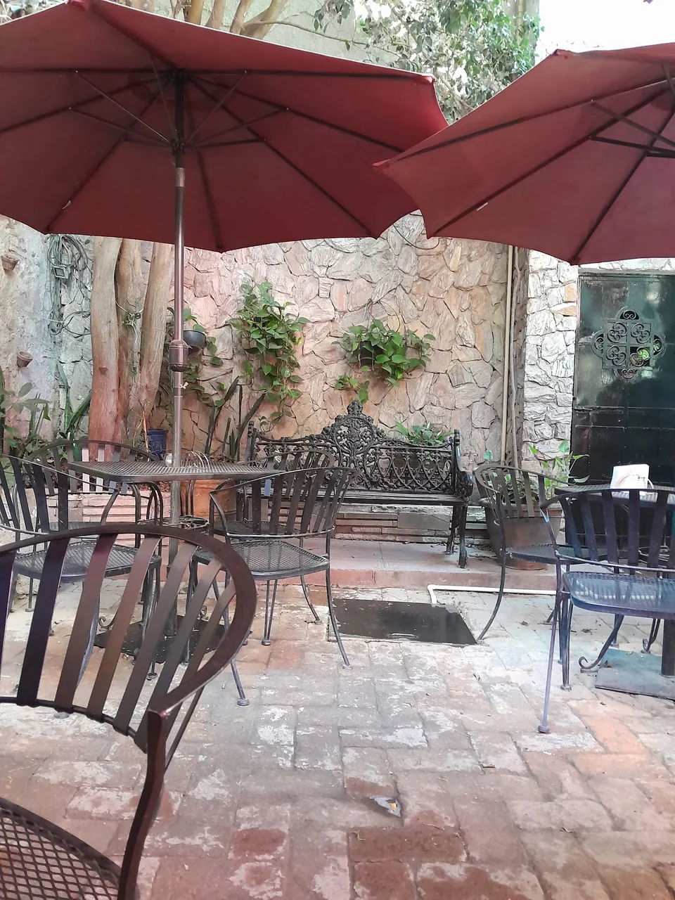
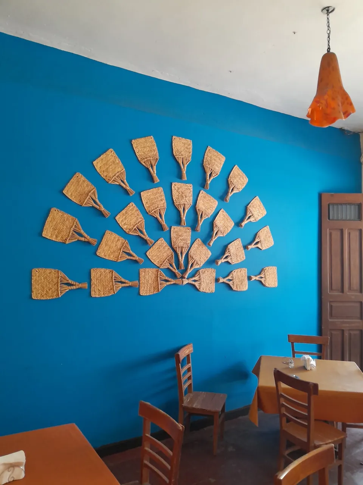
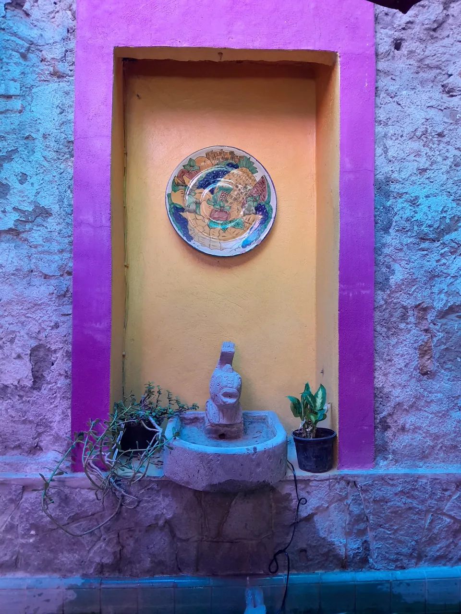
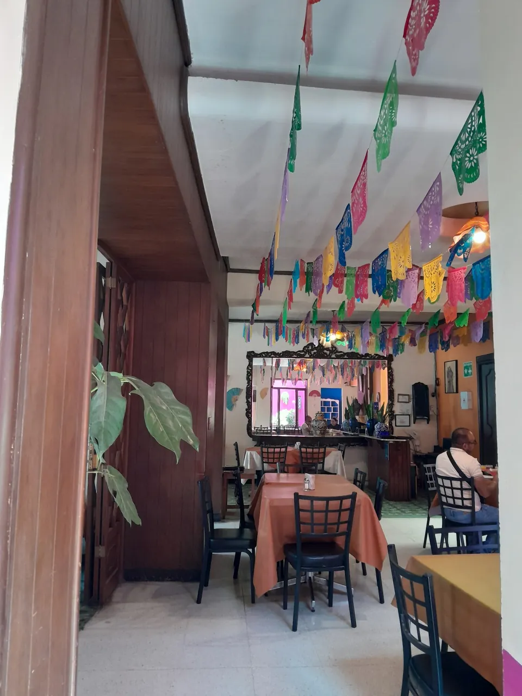
Visítanos
Te esperan en la calle Elizondo.
Los siete días de la semana
José F. Elizondo 203, Zona Centro, 20000 Aguascalientes, Ags.
Revisando horario
- Lunes8:30 a 18:00
- Martes8:30 a 18:00
- Miércoles8:30 a 18:00
- Jueves8:30 a 18:00
- Viernes8:30 a 18:00
- Sábado8:30 a 18:00
- Domingo8:30 a 18:00
Hay estacionamientos muy cerca.
Para la versión final
Todo listo para completar.
Pásanoslo por el mismo chat donde te llegó esta muestra.
- Tu carta con precios, para quitar los "Pregunta el precio".
- Tu WhatsApp, si lo usas, para pedir y apartar mesa.
- Tus redes (Facebook, Instagram) para el pie de página.
- Si hay paquetes de desayuno fijos, con qué incluyen y a cómo.
- Fotos tuyas de platillos y del patio con buena luz.
- Si aceptan reservaciones para grupos y para cuántos.